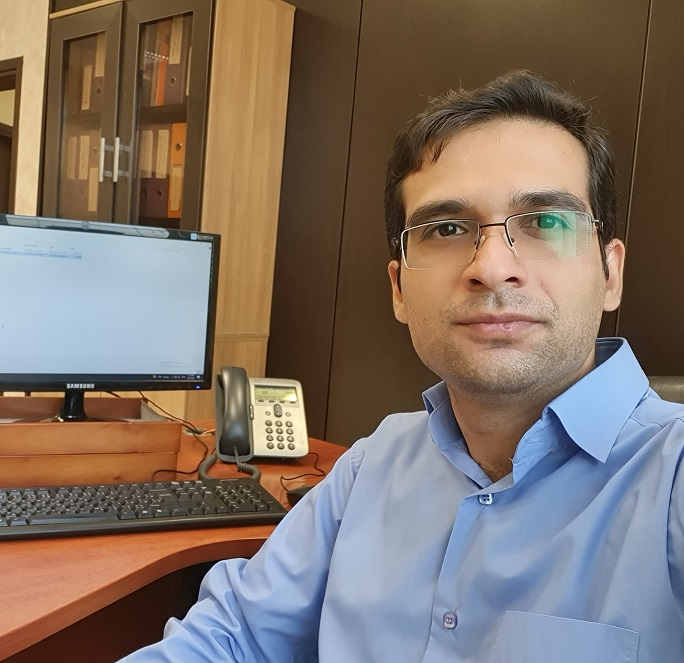

About
Dr. Jalal Delaram is an Assistant Professor of Industrial Engineering at the University of Tehran. He received his BSc, MSc, and PhD in Industrial Engineering from Sharif University of Technology (2010–2021), where he was recognised as a Distinguished PhD Graduate.
Dr. Delaram’s research lies at the intersection of Operations Management, Operations Research, and Game Theory. He develops analytical and algorithmic frameworks for complex decision-making problems in production and supply chain systems, with a particular focus on resource allocation, mechanism design, and strategic interaction among decentralised agents. His work is driven by a persistent question: “Can this model actually inform a real operational decision?” — a philosophy that shapes both his theoretical choices and his applied work.
While his methodological expertise spans optimisation, game-theoretic modelling, and data-driven analytics, he has applied these tools to various domains, including Cloud Manufacturing Systems and Computer Integrated Manufacturing. Unlike a purely technical approach to optimisation, Dr. Delaram places human incentives and strategic behaviour at the centre of his analysis — an orientation that reflects his deep engagement with game-theoretic thinking and mechanism design. His contributions have appeared in leading journals such as the Journal of Manufacturing Systems, Computers in Industry, and Management Science and Engineering Management.
Beyond academia, Dr. Delaram has a proven ability to bridge theory and practice. He has led and participated in industry projects involving Enterprise Resource Planning (ERP) implementation (e.g., SAP), strategic planning for organisational excellence, and advanced forecasting for operational decisions. One of his distinctive strengths is the ability to translate complex mathematical models into actionable managerial insights — a skill that has proven invaluable in his industry collaborations and executive engagements.
Dr. Delaram is also deeply committed to education and mentorship, guiding the next generation of engineers and researchers to think critically, model rigorously, and tackle problems that matter.
Beyond academia, he is an avid follower of Formula 1, a firm supporter of the Mercedes-AMG Petronas Team, and a lifelong fan of Real Madrid C.F. He often finds that the strategic depth, precision, and teamwork in these sports inspire his approach to research and problem-solving.
